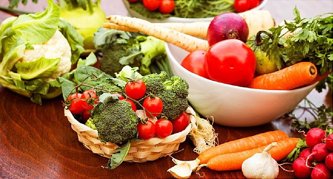

The Vegan Diet

This diet is a form of a vegetarian diet as it eliminates meat and animal products. One of the primary effects of this diet is that it reduces the intake of cholesterol and saturated fat. It takes some planning, but if a vegan diet is rationed out properly, it can have many positive effects. Studies have proven that those who practice a vegan diet minimize their overall risk of coronary heart disease, obesity and high blood pressure. To compensate for a lack of meat, vegans must find a way to incorporate more sources of protein and vitamin B-12 into their diets.
